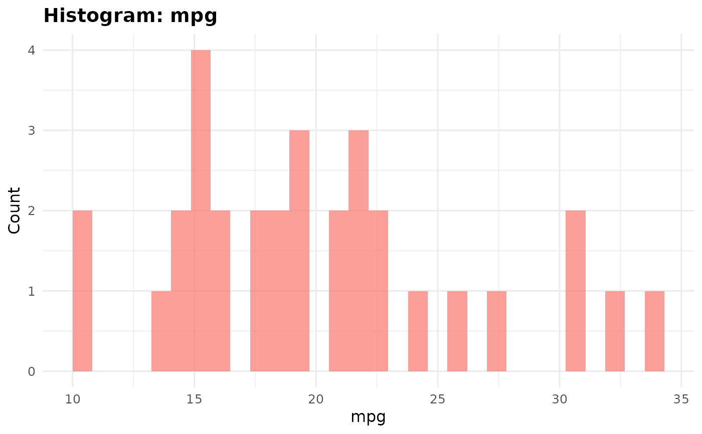
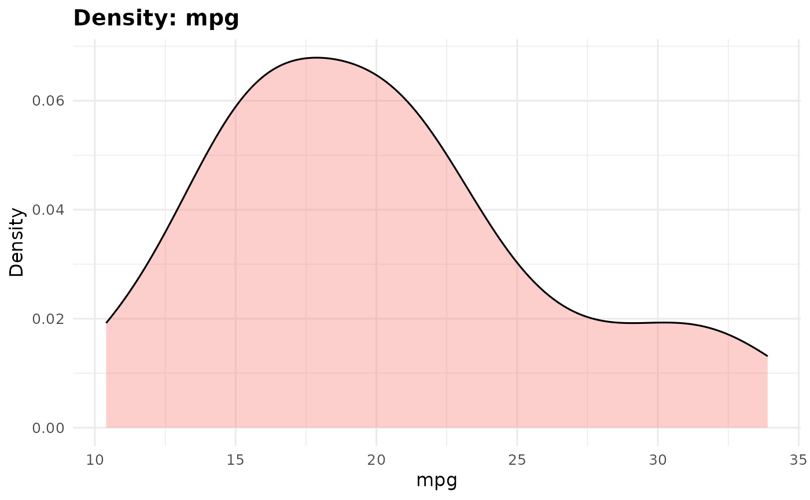
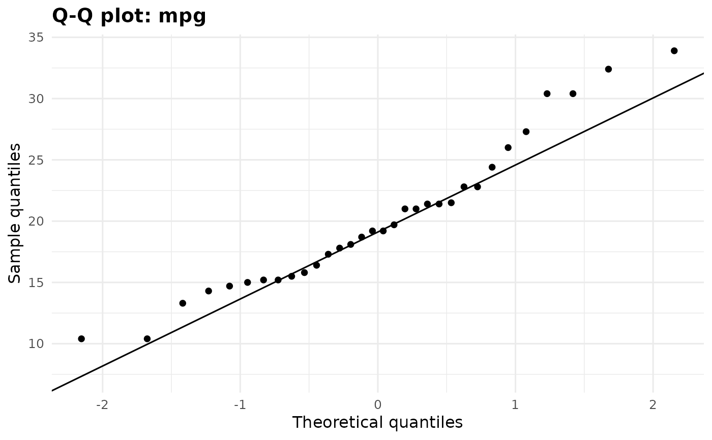
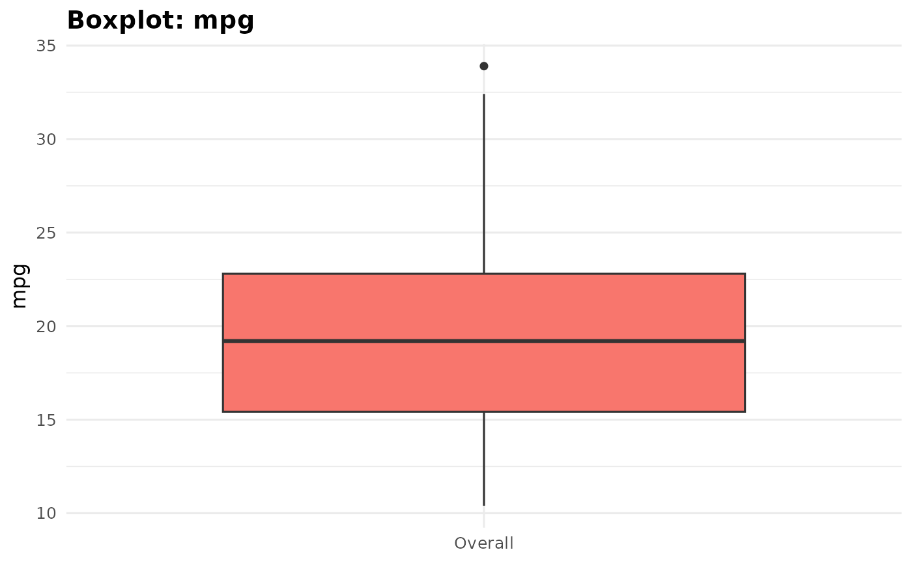
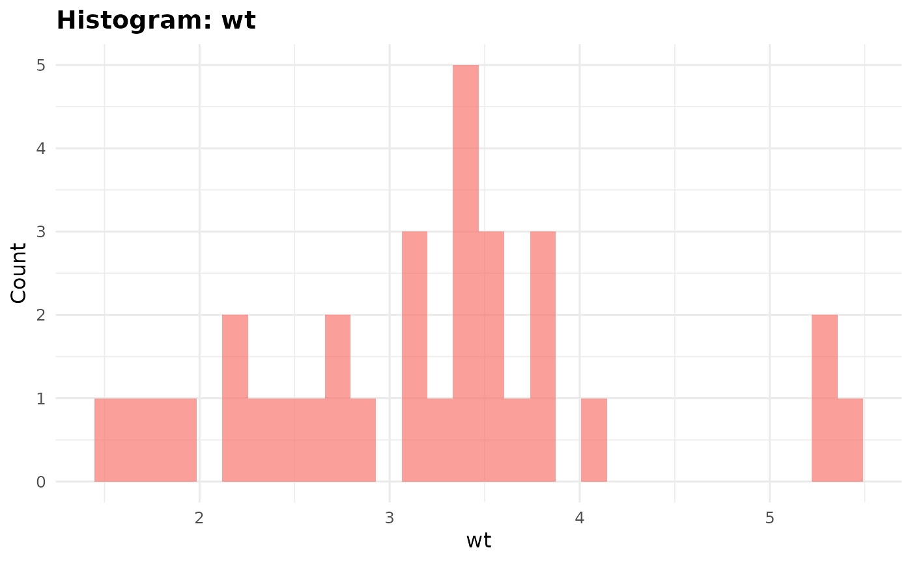
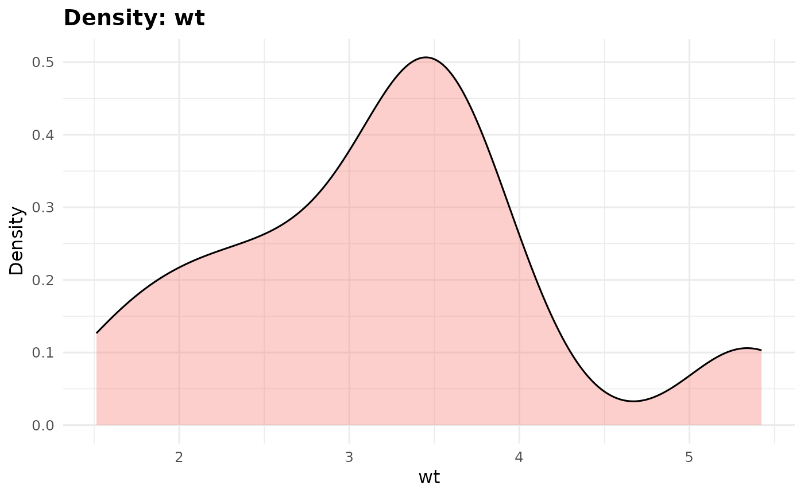
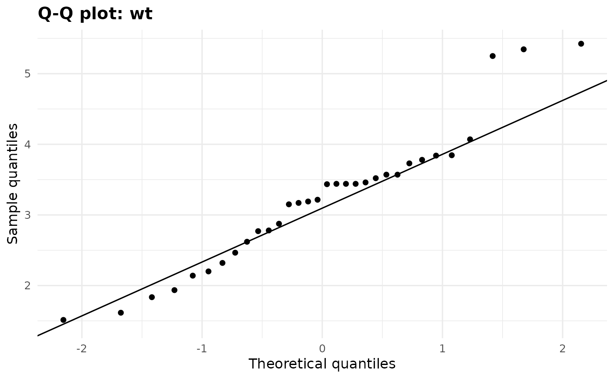
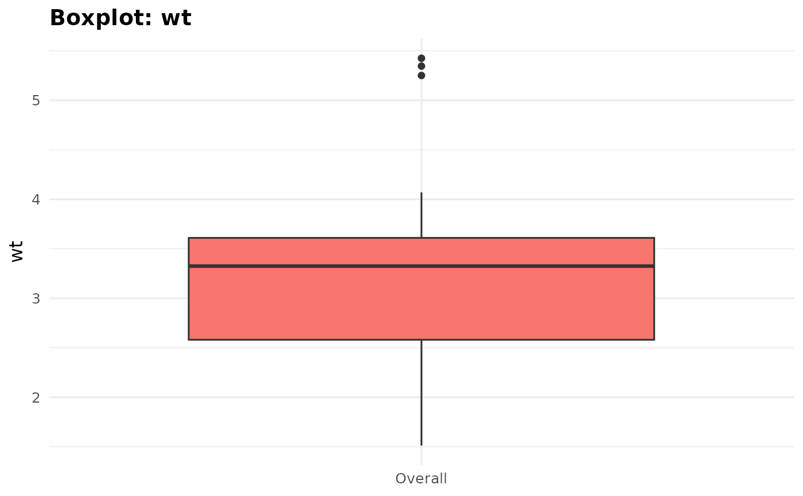

Assess the empirical distribution of continuous variables
Source:R/assess_distribution.R
assess_distribution.RdAssess the empirical distribution of continuous numeric variables to support descriptive reporting. The function describes missingness, finite sample size, skewness, and (optionally) Shapiro-Wilk results. It provides guidance about presenting a variable; it does not select an inferential test.
Usage
assess_distribution(
data,
vars = NULL,
by = NULL,
normality_test = TRUE,
skew_cutoff = 1,
min_n = 3,
plots = FALSE,
digits = 2,
format = c("table", "tibble")
)Arguments
- data
A data frame.
- vars
Continuous numeric variables to assess. Bare names or a character vector are accepted. When omitted, all detected continuous variables are assessed. Categorical, ordinal, logical, date-time, and binary variables are rejected when explicitly selected.
- by
Optional grouping variable, supplied as a bare name or character string. Factors, characters, logical variables, binary variables, and ordinal variables are supported.
- normality_test
Logical; run Shapiro-Wilk when 3 to 5000 finite observations are available. Default is
TRUE.- skew_cutoff
Positive absolute-skewness threshold for marked skew.
- min_n
Minimum finite observations required for a shape assessment.
- plots
Logical; create histogram, density, Q-Q, and box plots. Plots are stored in
$plots(orattr(result, "plots")for tibble output).- digits
Number of decimal places.
- format
Output format:
"table"(default) or"tibble".
Value
With format = "table", a gt_distribution object that prints as a
publication-ready table. $summary contains group-level diagnostics and
$recommendations contains one descriptive recommendation per variable.
With format = "tibble", the group-level summary tibble is returned.
Details
When by is supplied, diagnostics are calculated within every group and one
consistent, variable-level recommendation is also returned in
$recommendations. Shapiro-Wilk is supporting information only: it is
sensitive to sample size and never determines the recommendation by itself.
Examples
assess_distribution(mtcars, vars = c(mpg, wt))
assess_distribution(mtcars, vars = c(mpg, wt), by = am)
assess_distribution(mtcars, vars = "mpg", normality_test = FALSE)
assess_distribution(mtcars, vars = c("mpg", "wt"), plots = TRUE)$plots
#> $mpg
#> $mpg$histogram

#>
#> $mpg$density

#>
#> $mpg$qq

#>
#> $mpg$boxplot

#>
#>
#> $wt
#> $wt$histogram

#>
#> $wt$density

#>
#> $wt$qq

#>
#> $wt$boxplot

#>
#>